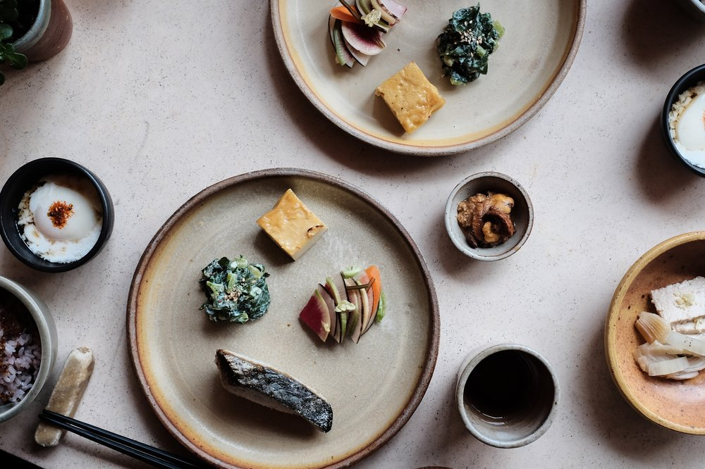

Okonomi is definitely my favorite place to sit down and eat. Being in Williamsburg, the restaurant, although is very small, has a very peaceful atmosphere that reminds me of Kyoto. The ceramics that they use to serve you are very elegant and Japanese. The ingredients are fresh and healthy and you will taste the best marinated fish in this restaurant.
The restaurant doesn't have a regular menu, instead, they serve what they have freshly on that day. This is the daily special meal that they serve everyday, which each will be a little different.